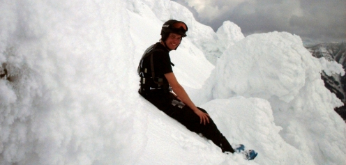

godis! interview

Some of you might have noticed this godis! dude playing a lot of mixes. But who is he and what’s his story? Keep on reading and you’ll find out!
Hello there godis! Please make a short introduction of yourself, where you’re from, hobbies, and how you got in touch with QuakeWorld in the first place.
Hey! i’m from sweden, more precisly Jönköpings Län, Sävsjö… I will be 21 years old in december, working as carpenter, singel atm ;) I got alot of hobbies, like music, skateboarding, computers, design, drawing, etc.. But skiing is my favourite thing to do! First time i got in touch with QW was the first year it was released, a friend of mine was playing qw over ISDN.. And i was watching him playing, and i tried some FFA my self at modem :)
You’re a frequent mix player, but you aren’t playing in any clan. How come? Have any current goals?
I have been away, and haven’t got any time for clans or something like that… But now i got more time, and maby a clan would be something… I have made one try out for BM(bacon men, or something), but that was some time ago, and i realised i wasnt good enough, and had no time atm… I had a dream about creating a clan with irl friends.. I tried, and got some friends playing some duel and 2on2.. But it faded away.. Maby i give it another try.
How do you see the community? What is good? What is bad?
I think the qw community is very nice, because you can talk with everyone if you want to, and if you have an idea or maby a question about something, its easy to ask it or write about it… But there is not enough players around, you can’t search for pracs/games and get desired div/skill opponents.. You have to arrange meeting with other ppl if you want too meet ppl with same skill. But maby, hopefully, that’s not a problem in a few years?!
Do you play any other games?
Yepp, i play dota with friends, i have been playing it in 3 years now i think.. It happens that I play Enemy Territory… It happens that i play some games that i played before Q3, CS, WC3 etc etc, but that’s mostly when im at LAN…
How would you compare CS and Q3 to QuakeWorld? (the games alone as well as their scenes)
Hum.. Ok lets start with CS.. It’s so easy to learn specially if you compare with QW, just aim at head and shoot…. And the tactics is like, “-We go plant the bomb bomb-site A, -Oh there is three enemys there, lets go B instead… Easier it can’t be… And the CS client sucks hard time, it don’t get improved at all. I think alot of CS-players is searching for some new fun gaming, we just need to show QW for em! The CS community is alot about who’s cheating imo…you can’t play without getting cheat accuse! If someone does something really nice, everyone thinks that person cheats.. But it’s alot more money in the community, the star players is kinda treated like superheroes : ) Hum, Q3 community i don’t know much about… It’s a good game though! But I see QW more like a sport than all other games, its so fast and fun to spec and play…
Do you like spectating big games just as much as you do playing? Are you trying to improve your own game? How? Checking demos?
Spectating the best players meet each others it’s alot of fun!, It’s like watching any other “normal” sport… You have your favourite team, and your favourite players! I try to learn as much as i can when i am specing big matches, how you use the weapons and armors you have in a good way… It’s better live ;)
What client do you use and with what settings? Any particular reasons/features?
I use ezquake… haven’t tried the new versions jet, heard that they wasnt soo good?!… I have made my own set up, own hud, and some own textures at armors etc… I use those simple blue white textures. I like to keep it clean, but with a mix of “eyecandy”!
Have you ever been at QHLAN? If not, what “view” have you got of the event? Would you consider going there?
Nope, never been at QH-LAN… I think it’s nice that soo many people shows up, it seems to be a good feeling in it… I have been thinking of going there, but I don’t have any clan or any friends that will come with me ;). I use to go to Dreamhack, i think it’s more prio for me than QH-lan…
I was just about to ask that too.. This upcoming DreamHack LAN may host a QuakeWorld duel tournament (if there is enough interest, read more). Will you attend? What do you believe is important to do, in order to keep the QW scene alive and attract new players, now that we have our chance at the world’s largest LAN-party?
It’s really nice news about the tourney! This is a good step in the right direction! There is nearly 10 000 gamers at dreamhack! This is where we should show our community and game! Gather alot of Quakers and go put up a big tourney, with the best players in it! It would be awezome… Play the finals at the BIG screen and try to do some advertisement for the game! It would grow alot… I think we should show QW like a true e-sport game!, and show them that QW is fast, aiming, tactic game!
Alright, That’s it. Thanks a lot. Any last shout-outs or needs to flame people (as that seem to be quite popular these days) ?
Haha!, nah, i think we need to show some more respect for other people… and sry for bad english ;) cu all
Good one.